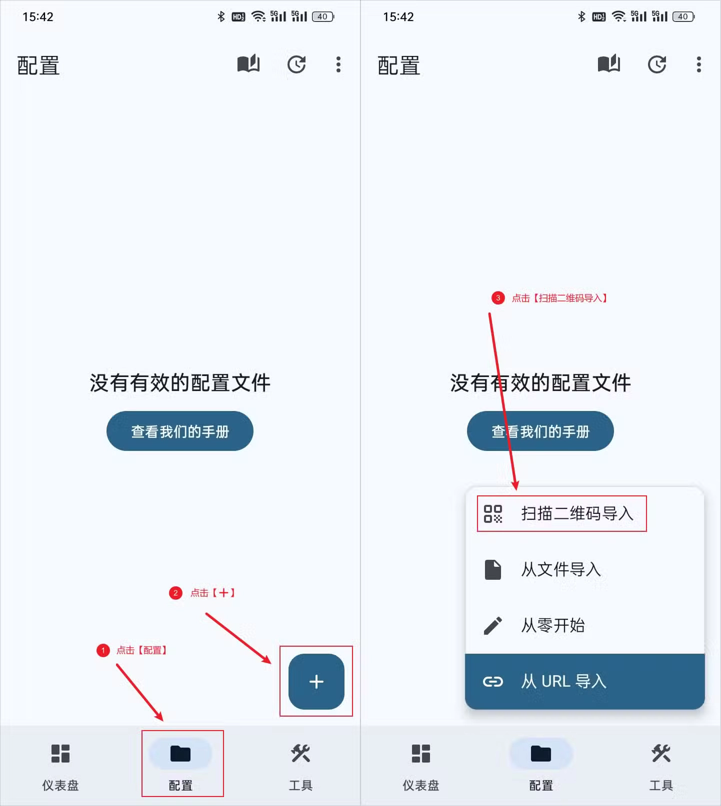
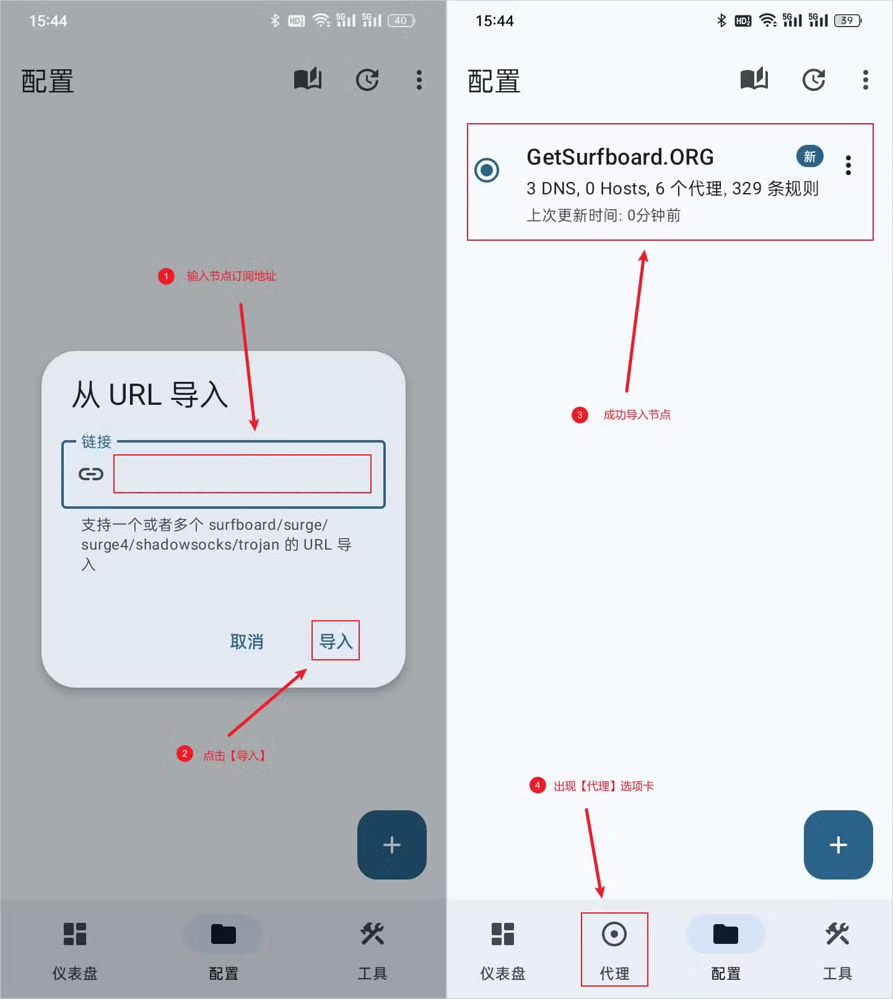
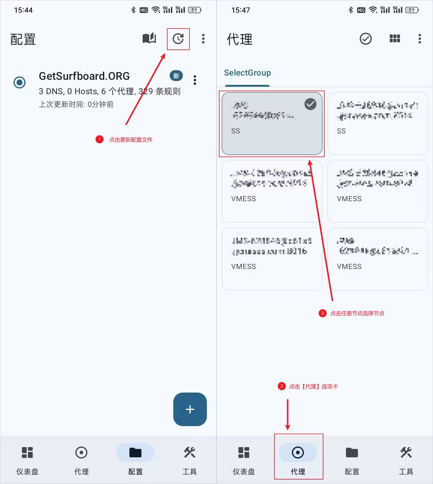
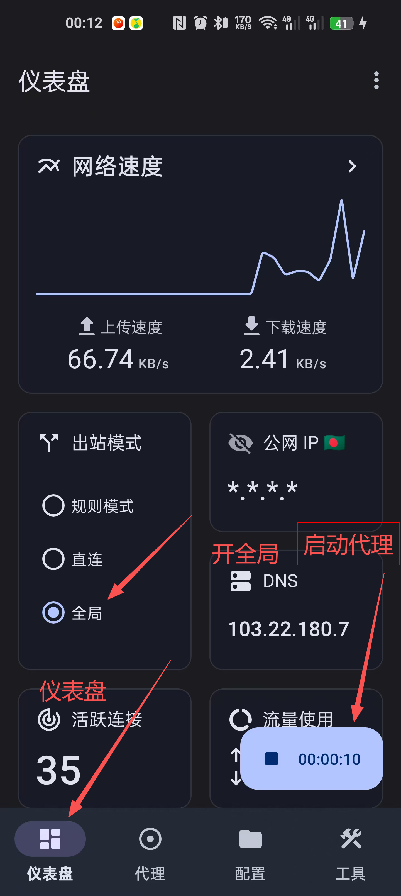

客户端说明
Android 平台推荐使用 Surfboard。它是一款常见的安卓代理客户端，支持通过订阅链接导入节点，并提供规则分流、节点切换和基础测速能力。
本地备份下载
为了防止官方仓库后续删包，已经在站点内保留了几份 APK 备份。一般用户优先下载 universal 或 arm64-v8a 版本。
版本选择建议：大多数近年的安卓手机选择 arm64-v8a；不确定时直接下载 universal；x86 和 x86_64 更常见于模拟器环境。
apk 安装包。如果 GitHub 下载速度较慢，可使用你站内其他页面已经整理的 GitHub 加速方式。
安装步骤
你可以直接从上方的本地备份下载，或者打开 Surfboard 的 Releases 页面下载最新版本。若不确定机型架构，优先选择 universal。
如果系统提示无法安装，请在手机设置中允许浏览器或文件管理器安装未知来源应用，然后重新安装。
安装完成后启动 Surfboard，首次打开时按提示授予必要权限。
导入订阅
推荐通过订阅链接导入节点，不建议新手手动逐条添加配置。
先登录你的机场后台，复制订阅地址。如果还没有订阅来源，可以先查看本站的通用使用教程。
进入配置页面，点击右下角 + 后，可以看到多种导入方式。新手不建议“从零开始”手动写配置，更推荐直接通过 URL 导入。

图 1：这是“从零开始”界面，适合手动创建配置，不推荐新手使用。
图 2：更推荐使用“从 URL 导入”，直接导入订阅链接。
导入完成后，手动更新一次订阅，确保节点列表已经成功拉取到最新内容。

图 3：在弹窗中粘贴订阅 URL，确认后完成导入。
选择节点并启动
在节点列表中优先选择延迟较低、连接稳定的线路。一般情况下，日常使用建议优先选择新加坡、美国、日本等可用节点。

图 4：导入完成后，进入代理页面选择一个可用节点。
点击 Surfboard 中的启动或连接按钮，首次启用时系统会提示创建 VPN 连接，点击允许即可。

图 5：点击启动按钮后，允许创建 VPN，即可开始使用代理。
启动后，打开浏览器访问 Google、YouTube 或 ChatGPT，确认代理已经正常工作。
常见问题
请确认下载的是完整的 APK 文件，并检查是否已允许当前安装来源安装未知应用。
常见原因包括：订阅链接复制不完整、机场服务异常、网络不可用，或订阅已过期。
建议先切换节点，再检查代理模式是否正确。如果所有节点都不可用，通常是订阅或机场本身出现问题。